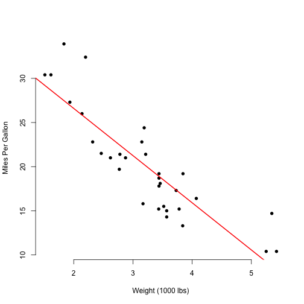
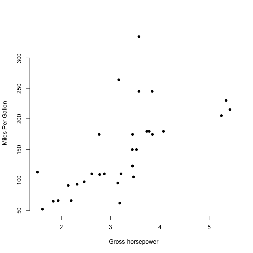

We created an app that selects a new predictor and the plot will update the axis with the selected predictor a new regression will be calculated and ploted, and at the end the most important values of the regression will be display.
Pablo Iocco
Software Developer
We created an app that selects a new predictor and the plot will update the axis with the selected predictor a new regression will be calculated and ploted, and at the end the most important values of the regression will be display.
Imagine we select Weight (1000 lbs)

Then we show the coefficients at the bottom
print(paste("R Squared:", round(summary(modelFit)$r.squared, 3)))
## [1] "R Squared: 0.753"
print(paste("Intercept:", round(modelFit$coefficients[1],3)))
## [1] "Intercept: 37.285"
print(paste("Slope:", round(modelFit$coefficients[2],3)))
## [1] "Slope: -5.344"
Then we change the predictor and a new plot and coefficients appear, thats it! 